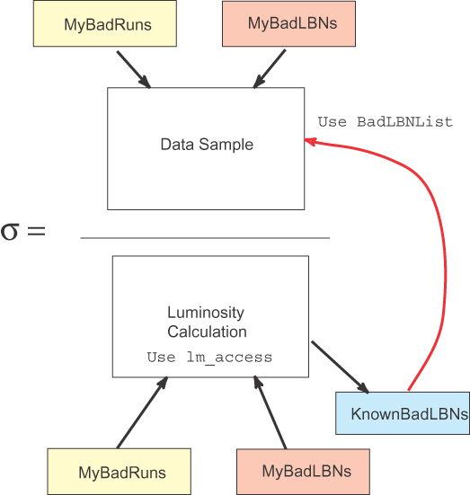

sample_luminosity
function
This utility will
calculate the luminosity for a given trigger and data sample and return
a bad lbns list for analysis
Syntax is:
sample_luminosity
<listoffiles> <parentagepath> <triggername>
It expects any good
runs to be in goodRunsList, bad runs in badRunsList and bad lbns be in
badLBNList
Output is 3 files
<listoffiles>_<trigger>.lum
summary of luminosity information
recorded_<listoffiles>_<trigger>.badlbns
list of bad lbns, including the input bad runs and lbns for recorded data
reconstructed_<listoffiles>_<trigger>.badlbns
list of bad lbns, including the input bad runs and lbns for reconstructed
data (includes checks on processing)

HOW TO USE THIS TO
GET A NORMALIZED CROSS SECTION
- Create a list of
bad runs for your sample in badRunsList
Or a list of good runs in goodRunsList
- Create a list of
bad lbns for your sample in badLBNList
/home/schellma/sample_luminosity
<listname> <parentagepath> <triggername>
It will produce
a luminosity summary and lists of bad lbns for your sample – this
is the OR of bad lbns from your bad runs bad lbns and those known to
be bad in the normalization. Use this list in your analysis!
-
In your analysis
code throw out the bad lbns from all sources
Use the class lm_access/BadLBNList
In p14-br (not released) and t04.00.00
#include “lm_access/BadLBNList.hpp”
// initialize and read in the
badLBNList from sample_luminosity
lm_access::BadLBNList* pbadlbnlist = new lm_access::BadLBNList();
pbadlbnlist->loadBadLBNs("./badLBNList");
// in your event loop –
cut out the bad lbns
if(pbadlbnlist->isBadLBN(lbn)) continue;
// at the end
delete pbadlbnlist;
|